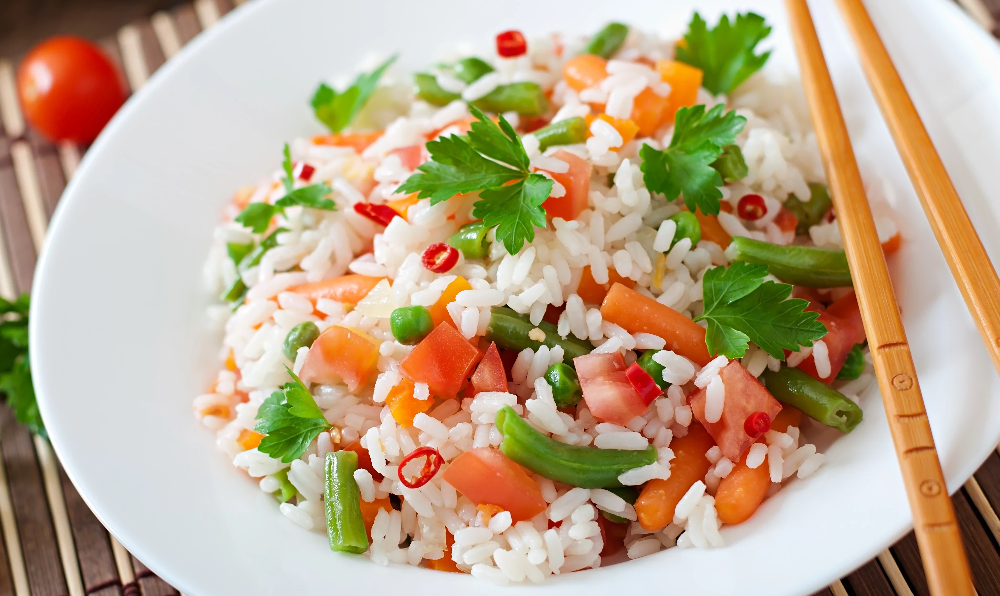

Arroz con Vegetales al Vapor

Descripción
El arroz vaporizado es una variedad de arroz blanco que ha sido sometido a un proceso de vaporización antes del pulido. Este proceso implica exponer los granos de arroz al vapor antes de retirar la cáscara exterior, lo que ayuda a retener más nutrientes en el grano.
Ingredientes
- - 1 Cucharada grande Aceite De Oliva.
- - 1 Unidad Ajo picado.
- - 1 Taza Cebolla Blanca picada.
- - 2 Unidades Pimientos Morrones o 1 Ají Dulce pequeño, finamente picados.
- - 1 Taza Zanahorias rallada.
- - 1 Taza Tayota rallada.
- - 2 Unidades Puerro finamente picado (Tallos).
- - 1 Palo Apio finamente picado (Tallo).
- - 2 Tazas agua caliente.
- - 2 Tazas Arroz Largo.
- - 2 Tabletas Caldo De Gallina Mi Sabor Maggi.
Pasos
-
Paso 1:
Vierte el aceite en una olla de fondo grueso. Saltea por 3 minutos el ajo, la cebolla, los pimientos, la zanahoria, la tayota, el puerro y el apio.
-
Paso 2:
Agrega el resto de los ingredientes, mezcla bien y deja hervir, tapa, reduce fuego y cocina de 15 a 20 minutos. Sirve de inmediato.